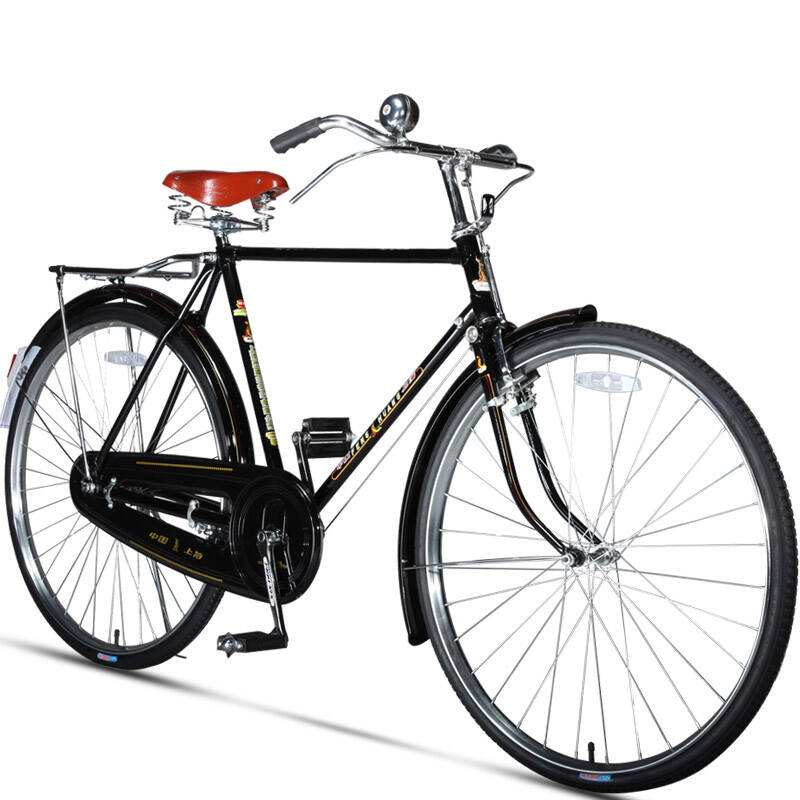
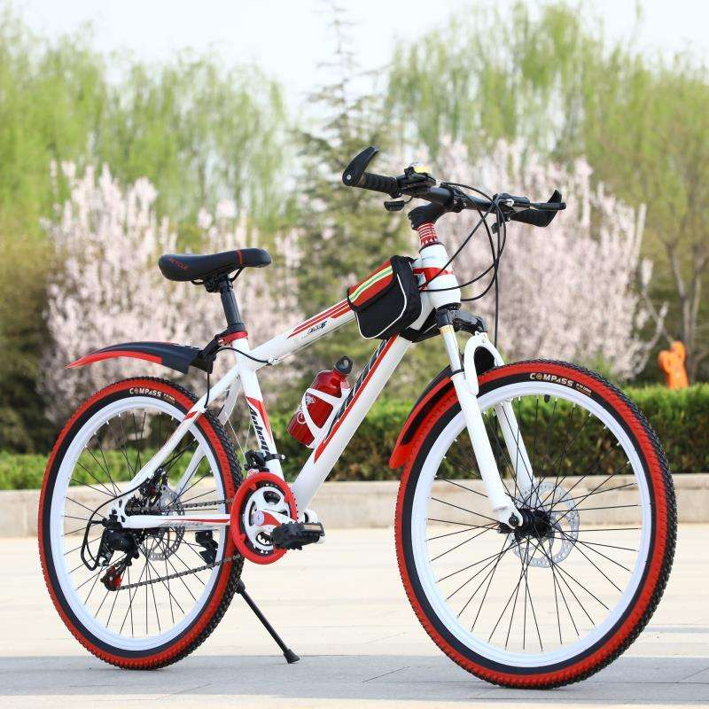
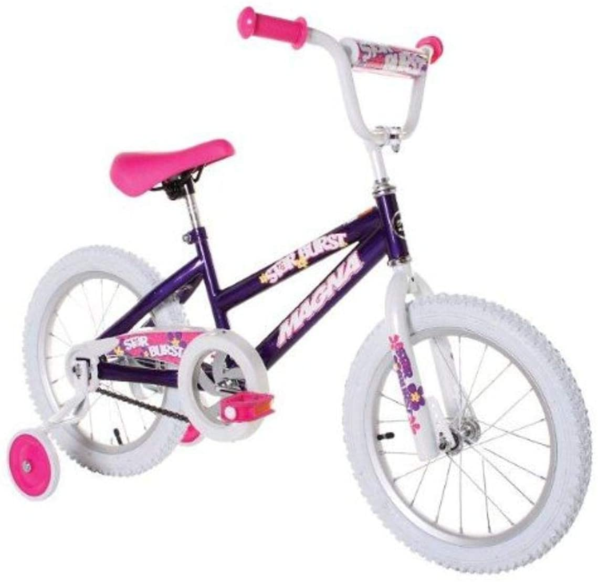
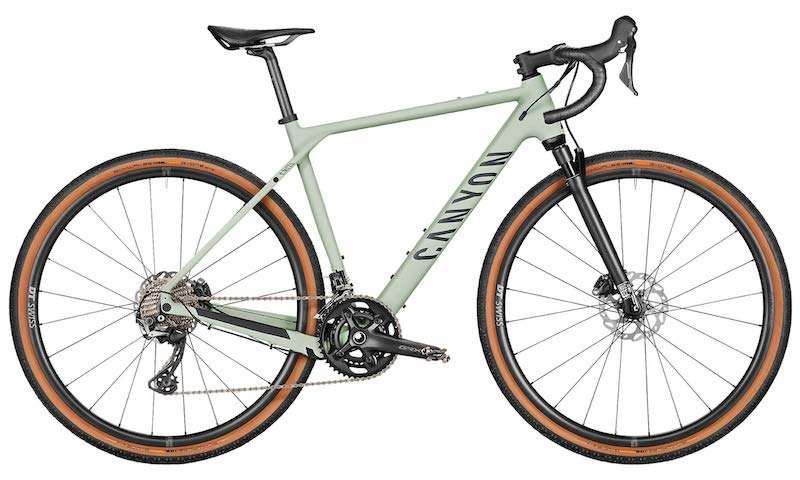
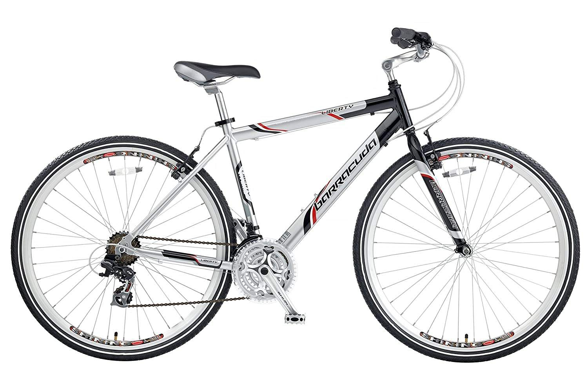
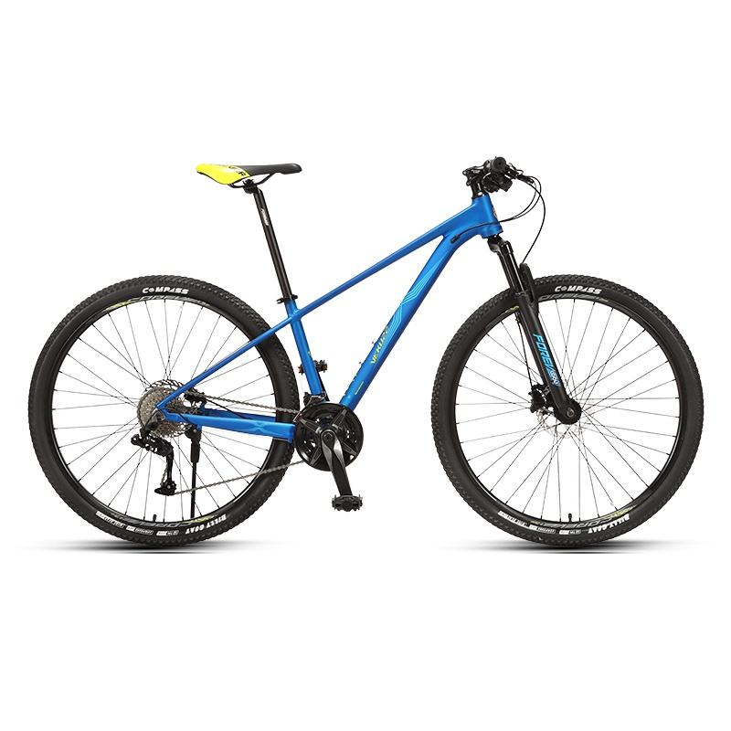
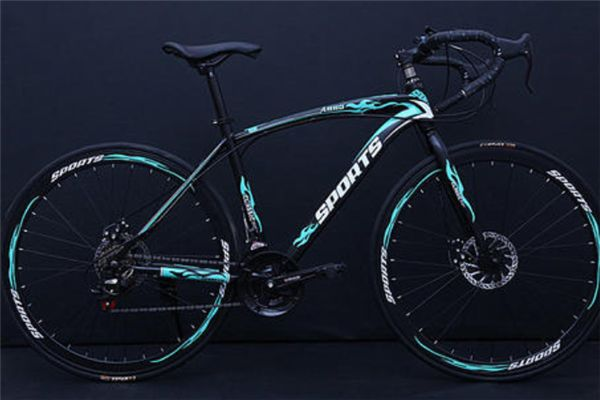

Content Collection
Bike Categories
- Mountain Bikes
- Complete Cruiser Bikes
- Kids' Bikes
- Men's Bikes
- Women's Bikes
- Adult Electronic Bikes
- Hybrid Bikes
- Road Bikes
- BMX Bikes
- Tricycles
Accessories
- Helmets
- Bike apparel/footwear
- Bike components
- Bike bags
- Bike computers
- Bike lights
- Bike locks
- Maintenance
- Bike pumps
- Bike tools
- Bike trailers
Brands:
- Schwinn
- Mongoose
- Huffy
- Dynacraft
- HH HILAN
- Sixthreezero
- Vilano
- Trek
- Giant
- Specialized
- Liv
- Electra
- Haro
- See More
Price
- Under $200
- $200 to $500
- $750 to $1000
- $1000 to $2000
- $2000 & Above
Bike Weight
- Under 15 Pounds
- 15 to 20 Pounds
- 20 to 25 Pounds
- 25 to 30 Pounds
- 30 to 35 Pounds
- 35 Pounds & Up
Bike Brake Type
- Caliper
- Cantilever
- Disc
- Linear Pull
Product Info
- Dynacraft Magna Kids Bike Girls 16 Inch Wheels
- $84.99
Parameters:
- Bike Type:Kids Bike
- Age Range:4+
- Brand:Dynacraft
- Wheel Size:16 inches
- Specific Use of Product: Trial
- Suspension Type: Rigid
- Special Feature:Training Wheel,Dirt bike, BMX
- Included Components: Training Wheels, Bike
- Number of Speeds:1
- Size:16"
Product Description
- Be The Star You Know You are! Ride And Shine On This Purple, Pink And White One Speed Bicycle.
- The 16 inch Starburst Girls' Bike Is Perfect For The Shining Star In Your Life.
- The BMX frame is decorated with vibrant pink and purple flowers with a hot pink seat, matching grips, pedals and training wheels.
- This Bike Is Sure To Make Any Little Girl Proud Of Her Ride.
The padded seat is comfortable and height adjustable. The coaster brake makes stopping easy and smooth.
About The Product:
- Girls beginner BMX street/dirt bike with coaster brakes
- Handlebar pad
- Adjustable training wheels
- Bike Dimensions 7" x 17" x 36.5", 27 pounds
Recommended for you:
- JOYSTAR 12" 14" 16" Kids Cruiser Bike with Training Wheels and Coaster Brake for Ages 2-7 Years Old Girls & Boys, Toddler Kids Children Bicycles
- ACEGER Girls Bike with Basket, Kids Bike for 4-9 Years, 14 inch with Training Wheels, 16 inch with Training Wheels and Kickstand, 20 inch with Kickstand.
- JOYSTAR Vintage 12 & 14 & 16 & 18 Inch Kids Bike with Basket & Training Wheels for 2-9 Years Old Girls & Boys (Green, Beige & Pink)
- Schwinn Elm Girls Bike for Toddlers and Kids, 12, 14, 16, 18, 20 inch wheels for Ages 2 Years and Up, Pink, Purple or Teal, Balance or Training Wheels, Adjustable Seat








